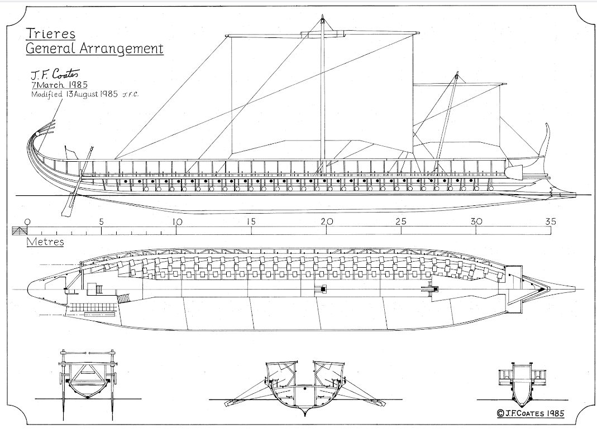
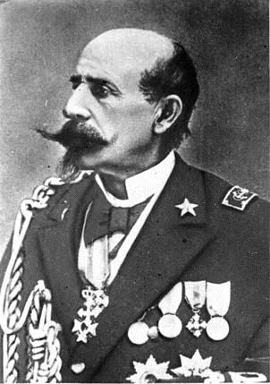

Моряки откровенно не воспринимают общепринятую теорию, сторонники которой, хотя и расходятся в деталях, но все же едины в том, что триера имеет три яруса весел, расположенных на существенных интервалах по высоте один от другого; при этом из рассмотрения исключаются варианты так называемых «широких полиер», предложенные немецкими учеными Бауэром и Ассманном. Мы неоднократно описывали элементы этой теории. Желающие ознакомиться с ней во всей полноте могут также обратиться, например, к сравнительно недавно (2014) вышедшей книге А.В.Банникова и М.А.Морозова «История военного флота Рима и Византии» (с.73-85) Именно общепринятая система гребли легла в основу проекта «Олимпия», целью которого было воссоздание облика афинской триеры.

Не отрицая очевидных фактов, свидетельствующих о многоярусном расположении гребцов на триере (литературные источники, надписи, изображения на монетах, скульптурные композиции и особенно барельеф Ленормана, о котором мы писали раньше), некоторые исследователи из числа моряков-практиков все же высказывали сомнения в том, что такой стиль гребли был господствующим в практике античных триер. Для примера рассмотрим суждения трех представителей этой группы, трех адмиралов: француза контр-адмирала Поля Серра, итальянского контр-адмирала Луиджи Финкати

и вице-адмирал флота США Уильяма Ледьярда Роджерса (мы ранее упоминали о его исследованиях в области динамики гребных судов)
Контр-адмирал Поль Серр (Paul Serre, 1818-1900) вступил на военно-морскую службу в 16 лет (в 1834 г.) и оставался на ней до 1880 года, пройдя все ступени карьерной лестницы морского офицера. После выхода в отставку увлекся историей античного флота и написал несколько работ в этой области. Оценка качества этих работ со стороны историков античности весьма сдержанна. Так, известный британский ученый Уильям Вудторп Тарн писал
I cannot classify Admiral Serre; though accepted, I believe, in France, his views seem to bear little relation to the evidence.
Я не могу определить место адмирала Серра; хотя он, думаю, популярен во Франции, его взгляды имеют мало общего с реальностью.
Tarn, The Greek Warship, 1905
Вместе с тем, Тарн признается, что благодарен Серру за перевод на французский язык знаменитой статьи адмирала Финкати Le Triremi, 1881, который появился как раз в рамках работы французского адмирала «Les marines de guerre de l’antiquité et de Moyen Age» (Военно-морской флот античности и Средних Веков), опубликованной в нескольких номерах Revue maritime et coloniale в 1885 году.
Указанное сочинение Серра вновь оказалось в зоне внимание историков, когда ссылка на него появилась в книге вице-адмирала Роджерса GREEK AND ROMAN WARFARE, Annapolis, 1937 (у меня издание 1964 года, но, мне кажется, оно не отличается от первого издания). Для лучшего понимания дальнейших рассуждений повторим расшифровку найденного на Акрополе барельефа Ленормана.

Приведем далее отрывок из книги Роджерса, имеющий отношение к Серру:
All the evidence from ancient writers, from coins, sculptures, paint-ings, and inscriptions is that in the triere oars were in three rows, one above the other. The celebrated relief from the Acropolis of Athens shows three rows of oars one above the other, and the interval compared to the figures of the men shows that each man had 3 feet in his own row. Although only the upper row of men is seen, the vertical distance between the rows of oars is 12 or 13 inches.
Taking any group of three rowers on different levels, the upper man (thranite) sat well inboard pulling a long oar. The man in the middle rank (zygite) sat 14 inches lower, 18 inches outboard, and 9 inches forward. Thus his head was between two oars worked by the men above him. Similarly, the man in the lowest rank (thalamite) pulled the shortest oar and was 14 inches lower, 18 inches outboard, and 9 inches forward of his zygite neighbor, so that his head was under the oar of the thranite of the next group forward.
We cannot doubt that this manner of rowing was used. The evidence is too strong to reject. But since the oars were of different length and weight, the highest efficiency could scarcely be reached with the same length and rapidity of stroke for all sizes of oars. We know that a racing stroke for a 12-foot oar is 36 and even 40 a minute, whereas the renaissance 36- to 42-foot oars, with as many as 5 men to each, never made over 26 strokes a minute. Particularly, were the sea to become rough the three ranks would almost certainly embarrass each other. It is therefore probable that the ancients did not go into battle nor maintain their ships under service conditions with one man to each oar. I prefer to agree with Admiral Serre that the "simultaneous" stroke, as he calls it, with every oar manned, was a parade and review stroke like the Prussian "goose step," not very efficient, but showy and used for ceremonies, when the people on shore cheered the fleet as it entered or left port.
Все свидетельства древних авторов, изображения на монетах, скульптуры, живописные работы и надписи демонстрируют нам расположение весел в три ряда, один над другим. На знаменитом барельефе с афинского Акрополя (барельеф Ленормана – g._g.) показаны три ряда весел, один над другим, а интервал между гребцами сопоставим с размером их фигур, составляя между соседними гребцами в ряду величину 3 фута (ок. 92 см). Хотя мы видим только верхний ряд гребцов, расстояние между рядами весел равняется 12-13 дюймов (ок. 30-33см).
Если взять любую группу из трех гребцов на различных уровнях, то верхний гребец (транит) сидит на значительном удалении от борта и гребет самым длинным веслом. Гребец в среднем ряду (зигит) сидит на 14 дюймов (ок. 35 см) ниже, 18 (ок.45 см) дюймов ближе к борту и на 9 (ок.23 см) дюймов ближе к носу. Таким образом, его голова находилась между двумя веслами гребцов сверху. Аналогично, гребец самого нижнего ряда (таламит) гребет самым коротким веслом и находится на 14 дюймов ниже, 18 дюймов ближе к борту и на 9 дюймов ближе к носу, чем ближайший к нему зигит, а его голова находится под веслом транита из следующей к носу группы.
Мы не можем поставить под сомнение, что применялся именно такой способ рассадки гребцов. Доказательства достаточно серьезны, чтобы их отвергать. Но так как весла имели различную длину и вес, наивысшая эффективность едва ли могла быть достигнута при такой же длине весел и темпе гребли для всех размеров весел. Мы знаем, что темп гребли во время шлюпочных гонок для 12-футового весла достигает 36, даже 40 гребков в минуту, в то время как для 36-42-футовых весел эпохи Возрождения, каждым из которых гребли 5 человек, темп гребли никогда не превышал 26 гребков в минуту. В случае же неспокойного моря гребцы трех ярусов почти наверняка мешали бы друг другу. Весьма вероятно, что в античную эпоху моряки выходили в атаку или вели свои корабли в ходе повседневной службы, не всегда имея по одному гребцу на каждое весло. Я предпочитаю согласиться с адмиралом Серром, что «симультанный» ход галеры, как он называет его, когда на всех веслах сидят гребцы, являлся парадным ходом, греблей на смотрах, подобно прусскому «гусиному шагу», не очень эффективному, но зрелищному, используемому при церемониях, когда зрители на берегу приветствуют флот, входящий в порт или покидающий его.
William Ledyard Rodgers, GREEK AND ROMAN WARFARE, Annapolis, 1964, p.42
Таким образом, адмирал Роджерс, не отрицая ярусную конструкцию античных триер, все же считает, что в повседневной и боевой практике для гребли задействовали только часть этой структуры, а не все три уровня весел. В этом он следует гипотезе Серра, который полагал, что все ряды весел одновременно использовались лишь для парадного хода: la vogue de parade que nous avons appelée vogue simultanée. («парадный ход, который мы называем симультанным ходом»). Simultané – симультанный, одновременный, от латинского simul – совместно, одновременно.
О вкдаде адмирала Финкати в изучение систем гребли на средневековых галерах мы писали ранее. Он разработал и практически продемонстрировал, как размещались и работали гребцы на венецианских галерах системы alla sensile. Реализм и практическая осуществимость предложенного Финкати стиля гребли были подтверждены не только представленными адмиралом моделями, но и извлечениями из документов тринадцатого-шестнадцатого веков на различных языках, совершенно определенным образом описывающих данную систему, предполагающую трех гребцов на одной банке, каждый из которых работал своим веслом: galee armate ad tres remos ad banchum — galie armate a tre remi per bancho — galie da tre ordini di remi — galie da tre remi e tre homeni per bancho. Эти определения находили недвусмысленное подтверждение в произведениях изобразительного искусства той эпохи. Чтобы приведенные аргументы стали совсем уж неотразимыми, Финкати взял из венецианского арсенала длинный катер, снабдил его десятью банками, посадил на каждую по 3 гребца, которые гребли каждый своим веслом, прилаженным к соответствующим уключинам и проходящим через один общий для группы из трех гребцов гребной порт в борту. Демонстрация работоспособности такой схемы прошла публично и успешно.
Далее настала очередь логических умозаключений. Финкати считает, что многовековой опыт развития кораблестроения подтверждает одну непреложную истину: конструкции кораблей передаются из поколения к поколению и переходят из века в век, практически не претерпевая существенных изменений. Отсюда сразу же следует вывод, что античные триеры мало чем отличались от своих средневековых собратьев в Генуе, Венеции и на Сицилии. Адмирал идет дальше. Описывая переход в XVI веке от системы alla sensile к системе a scaloccio, когда одним большим веслом гребут несколько человек, Финкати утверждает, что точно такой же переход произошел в античную эпоху с гребными кораблями Древней Греции.
Гипотезу Финкати, с несущественными уточнениями, поддержали такие авторитетные ученые, как Кук, Тарн и другие. Но к мнениям ученых-историков на эту тему мы обратимся уже в следующий раз.